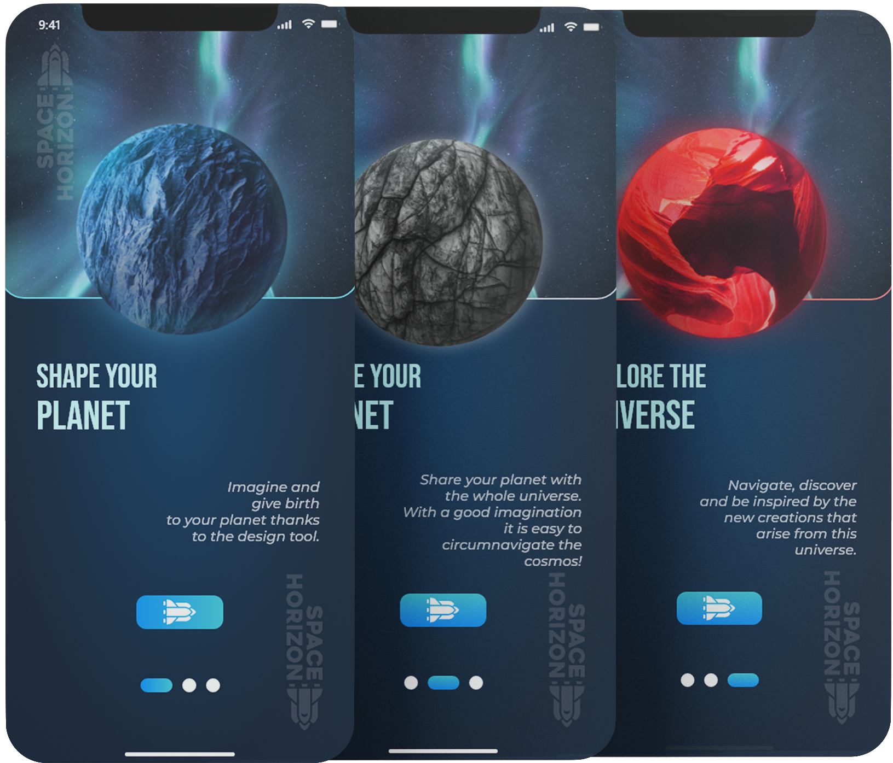
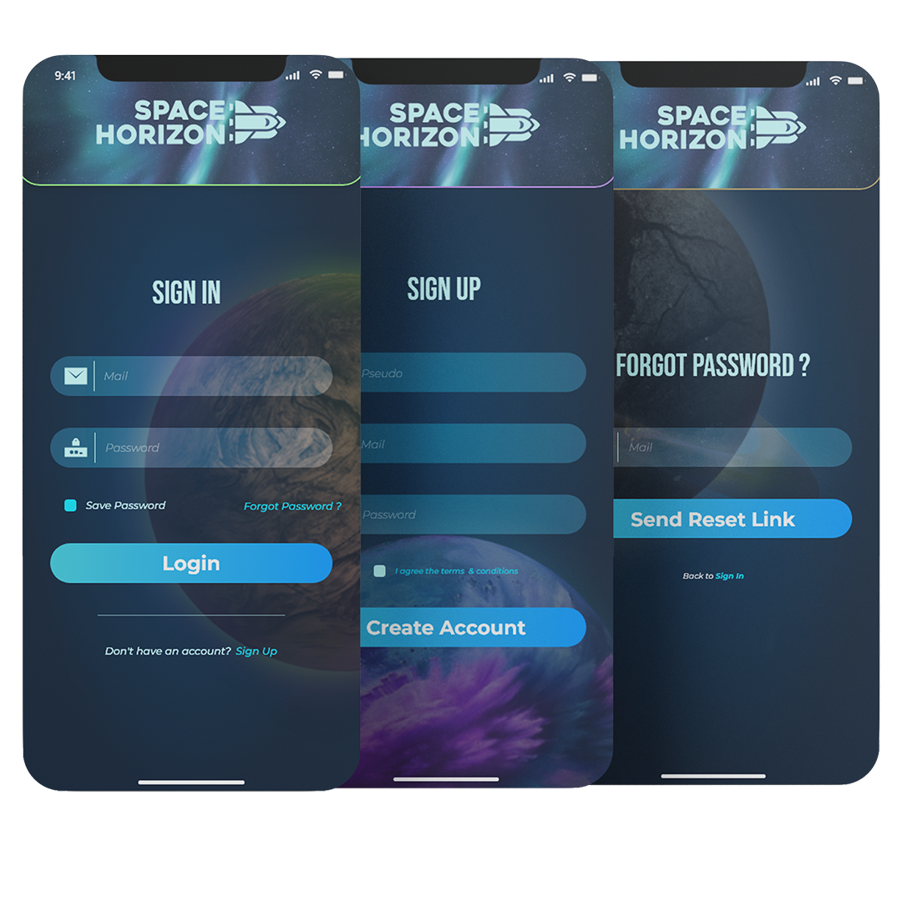
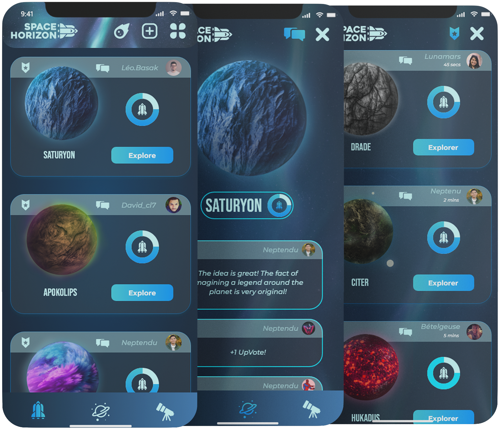
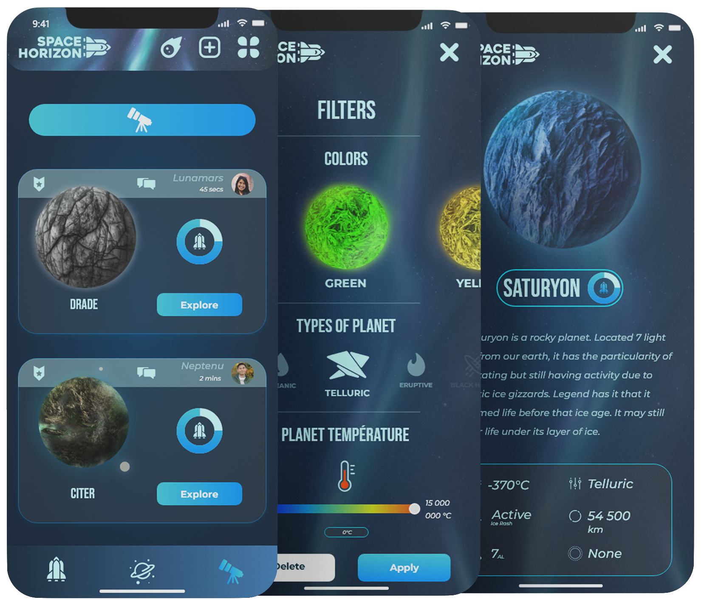
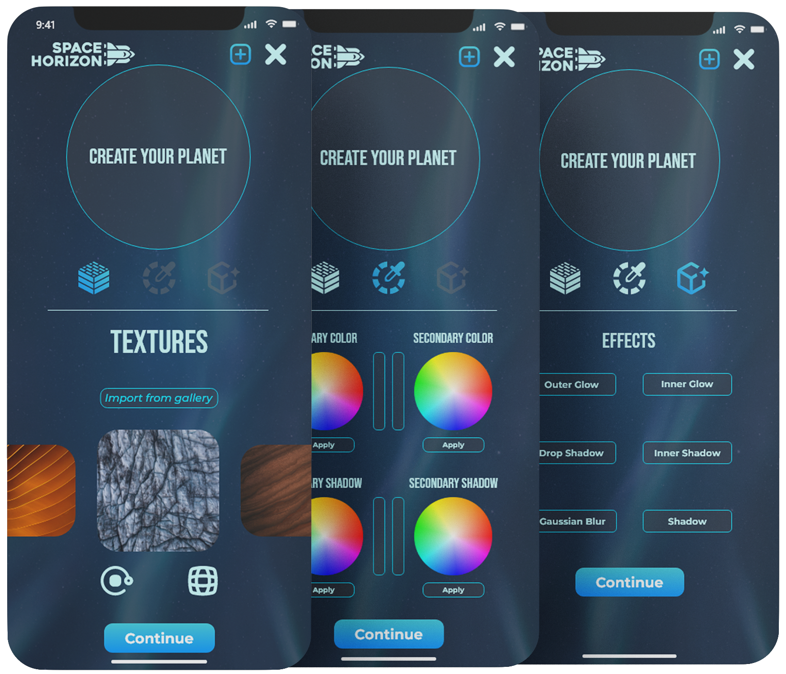
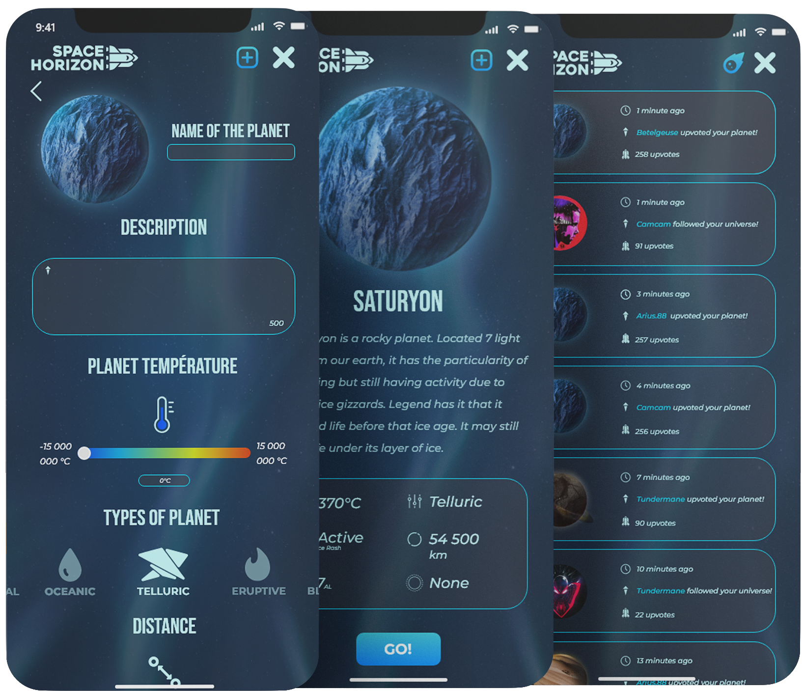

SpaceHorizon est un réseau social fictif pour mobile sous forme d'une maquette animée sur adobe XD
Il a pour objectifs :
- De réunir les utilisateurs autour du thème de l'espace -
- De laisser place à la créativé des utilisateurs de créer et partager leur propre planète -
- De laisser une histoire et du détail à chaques publications -
SpaceHorizon est une maquette animée de réseau social sous forme d'application mobile.
Elle laisse aux utilisateurs la possibilité de créer leurs propre planètes et de les partager avec toute la communauté.
Ici vous allez pouvoir créer et personnaliser vôtre compte.
Naviguer sur le flux d'actualité dévoilant de nouvelles planètes que vous allez pouvoir explorer.
Découvrir les planètes les plus populaires en tête de liste.
Et créer vous aussi vôtre astre pour le faire découvrir à votre tour aux utilisateurs de SpaceHorizon
A votre arrivé sur SpaceHorizon ce présente trois pages.
Ici ce trouve de brèves explications pour vous lancer sur l'appli !
L'utilisateur peut naviguer entre ces trois pages avec le bouton et les témoins de page.
La troisième présentation vas directement vous envoyer sur la page d'inscription.
En vous souhaitant la bienvenue sur SpaceHorizon !


Voici les pages d'inscription et de connexion.
Votre mail, un mot de passe et votre pseudo seront demandés pour l'inscription.
La page de connexion sera disponible pour votre prochaine connexion.
Mot de passe oublié ?
Vous pourrez intéragir avec "mot de passe oublié";
vous serez rediriger vers la page de récupération.
Une fois votre compte créé vous serez envoyé dans l'univer de SpaceHorizon !
Bienvenue sur votre profil SpaceHorizon !
Ici vous allez pouvoir retrouver toutes vos créations !
Cet espace va vous représenter au regard de la communautée.
Vous aurez la possibilité de l'éditer via le bouton "Editer mon profil"
Biographie, pseudo et votre photo de profil pourront être changés.
Du point de vue utilisateur, le bouton "Editer mon profil" est remplacé par "S'abonner"
Si quelqu'un aime votre profil, vous le saurez donc rapidement !

Ici ce trouve l'espace "Top Planet" !
Les créations les plus aimées y sont regroupées.
Chaques planètes peuvent être :
"UpVoted" via le bouton en forme de fusée qui indique le nombre d'UpVotes -
Enregistrées avec le bouton d'enregistrement en haut à gauche de la publication -
Commentées grace au bouton "Bulle de discution" en haut à gauche de la planète -
Et bien entendu explorées où ce trouve le grand bouton d'exploration -
L'espace enregistrement se trouve sur le profil en haut à droite du logo SpaceHorizon
Vos planètes favorites s'y retouveront!
L'espace commentaire lui s'ouvre sur une nouvelle page.
Par là, c'est la zone d'exploration ainsi que le flux d'actualité !
Ici apparait toutes les nouvelles créations de la communautée SpaceHorizon !
Dans le même fonctionnement que la section "Top Planet"
Elle possède un bouton de recherche qui vous redirigera sur la page "Filtres"
La page filtres permet de faire une recherche de planète via :
- Ça couleur dans sont ensemble.
- Le type de planette.
- Ça température.
Bouton "Explorer" appuyé, vous entrez sur la page de présentation de la planète.

Pour naviguer entre "TopPlanète", "Profil" et "Exploration" s'affiche une barre en bas de l'application.
Il suffit de sélectionner l'icone de l'espace voulu pour y voyager !
Pour créé votre planète, allez sur l'icone à gauche du menu depuis votre profil.
Le choix de la texture s'impose dans un premier temps.
Un "slider" avec quelques textures de bases est mis à votre disposition.
Vous pouvez importer votre propre texture d'après les règles de l'appli !
La texture pourra être modelée et ajustée via les icones de rotation et de déformation.
La couleur est le second paramètre à sélectionner qui se divise en plusieurs couches.
Sont application se fait via l'outil pinceau que l'utilisateur pourra utiliser sur la planète.
Et pour finir l'application d'effets comme pour les couleurs !
De quoi donner naissance à une planète complètement unique !


La suite de la publication se poursuit par la description et les paramètres de la planète.
Vous pourrez renseigner un texte de 500 caractères pour décrire votre astre.
Puis plusieurs paramètres seront à votre disposition comme :
La tempétature de la planète -
Ça distance par rapport à la terre -
Sont diamètre -
Sont activitée, avec la possibiliter de développer -
Et de sont atmosphère, si il en possède une -
Il ne vous restera plus qu'à valider, observer le rendu final et publier!
Pour suivre l'avancée des explorations des autres utilisateurs
Allez voir vos notifications sur votre profil à gauche du boutton de publication !
Pour terminer l'exploration de SpaceHorizon je vous présente les paramètres !
Ils se trouvent sour les pages principales tout en haut à droite.
Notifications, Confidentialité, Sécurité et votre comptes pourront être paramètrés.
Vous aurez aussi accès aux informations complémentaires de l'application.
Vous pouvez télécharger le prototype adobe XD de SpaceHorizon si dessous !